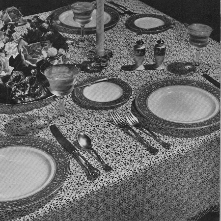
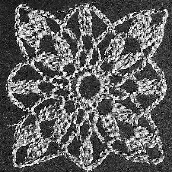

7734 Crochet Tablecloth Pattern
MATERIALS:
J. & P. COATS OR CLARK'S O.N.T. BEST SIX CORD MERCERIZED CROCHET, Size 30, Small Ball: J. & P. COATS-73 balls of White or Ecru, or 87 balls of any color, or CLARK'S 0.N.T.-109 balls of White or Ecru, or 135 balls of any color. Big Ball: J. & P. COATS-36 balls of White, Ecru or Cream
Steel Crochet Hook No. 1.0.
Tablecloth measures 60 x 80 inches.
GAUGE: Motif measures 1 5/8 inches square.
FIRST MOTIF: Starting at center, ch 12. Join with sl st. 1st rnd: 24 sc in ring. sl st in first sc.
2nd rnd: Sc in same place as sl st, * ch 5, skip 1 sc, sc in next sc. Repeat from * around, ending with ch 2, dc in first sc (12 loops).
3rd rnd: * Ch 5, in next loop make cluster, ch 5 and cluster-to make a cluster, holding back on hook the last loop of each tr make 3 tr in same place, thread over and draw through all loops on hook; (ch 5, sc in next loop) twice. Repeat from * around, ending with ch 2, dc in top of dc.
4th rnd: Ch 4, 2-tr cluster in loop just made, * ch 5, sc in next loop, ch 5, in corner loop make cluster, ch 5 and cluster; ch 5, sc in next loop, ch 5, cluster in next loop. Repeat from * around, ending with ch 5, sl st in top of first cluster. Break off.
SECOND MOTIF: Work as for First Motif until 3 rnds are completed.
4th rnd: Ch 4, 2-tr cluster in loop just made, ch 5, sc in next loop, ch 5, cluster in corner loop, ch 2, sl st in corner loop of First Motif, ch 2, cluster in same loop as last cluster on Second Motif; ch 2, sl st in corresponding loop of First Motif, ch 2, sc in next loop on Second Motif, complete rnd, joining next 4 loops to corresponding loops of First Motif as before.
Make 35 rows of 48 motifs, joining adjacent sides as Second Motif was joined to First Motif (where 4 corners meet, join 3rd and 4th corners to joining of previous 2 corners).
EDGING: 1st rnd: Attach thread to a corner loop, ch 4 and complete a cluster, ch 10, cluster in same loop, * ch 10, sc in next cluster. Repeat from * around, making cluster, ch 10 and cluster in each corner loop. Join.
2nd and 3rd rnds: Sl st in next ch, sl st in same loop, ch 4 and complete cluster as before, ch 10, cluster in same loop, * ch 10, sc in next loop. Repeat from * around, making cluster, ch 10 and cluster in each corner loop. Join. Break off at end of 3rd rnd.

HOME